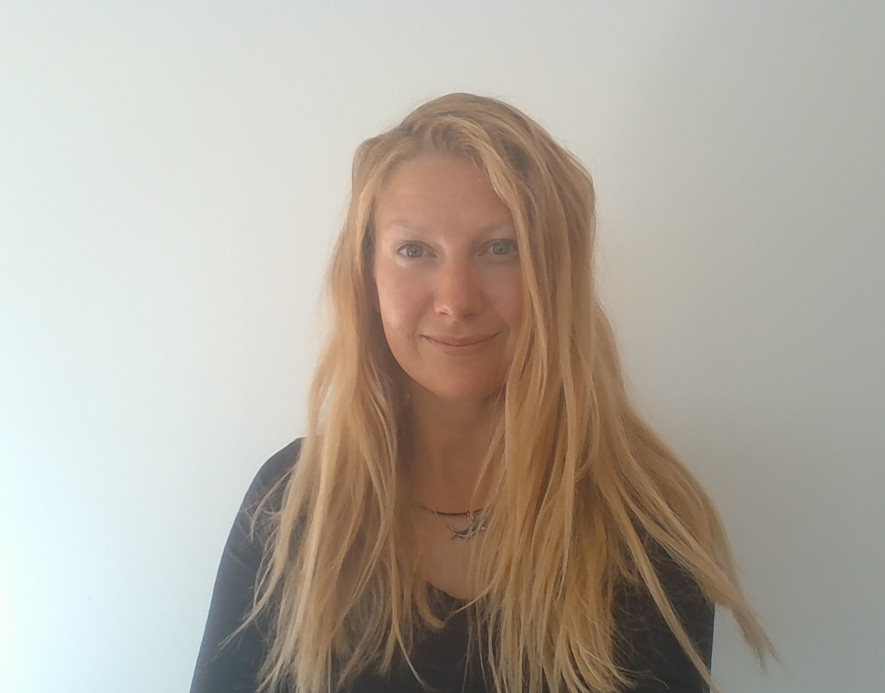

UKCOTS 25 - Conference Information
UKCOTS 2025 Timetable
UKCOTS 2025 will take place on the 24th - 25th June at the Wolfson Medical School, University of Glasgow.
A preliminary schedule of events during the conference is now available to view here. Please note this schedule may be subject to change.
Plenary Session - Generative AI vs. Critical Thinking
We are delighted to announce that our plenary session at UKCOTS 2025 will explore the relationship between generative AI and critical thinking, studying its implications for higher education. Our three invited speakers will present perspectives on generative AI in education within their own practice, followed by a panel discussion.

Dr Emily Nordmann is the Deputy Director of Education in the School of Psychology and Neuroscience and incoming Associate Dean for Learning and Teaching for the College of MVLS at the University of Glasgow. She specialises in the teaching and research of data skills using R, with a particular focus on making these skills accessible to undergraduate psychology students. Dr Nordmann is a core member of the PsyTeachR team, through which she has co-authored several open-access textbooks that promote data literacy. These resources are widely adopted across the UK and internationally, and have played a significant role in shaping best practice in statistics education within psychology.

Dr Jenn Gaskell is a Lecturer in the School of Maths & Stats at the University of Glasgow. Here, she chairs the school’s AI committee and is involved in the creation of several courses around effective and responsible AI usage for data scientists in both academia and industry. She teaches Python programming and machine-learning across the Statistics and Data Analytics Masters programmes. Jenn is interested in the impact of AI on statistical education, with a passion for teaching relevant skills for entering an AI-enabled workplace.
Dr Matthew Forshaw is Senior Advisor for Skills to The Alan Turing Institute, the UK’s national institute for Data Science and Artificial Intelligence, and a Reader in Data Science at Newcastle University, UK. His work in data and AI skills includes working with the Government on the skills pillar of the UK’s National Data Strategy and National AI Strategy, as College of Experts member to the UK Department for Science, Innovation and Technology (DSIT), and leading the development of AI Skills for Business competency framework with Innovate UK BridgeAI. His work on professionalisation of the data science occupation with the Alliance of Data Science Professionals is having a significant impact on public and professional policy and practice, setting professional values and ethical standards for the use of data science and AI for the UK’s accreditation and certification processes across several major professional bodies. He is passionate about democratising access to, and widening participation into, data and AI skills training at all levels.
StataNow 19 Workshop
We are excited to share that during the conference, we will host a workshop on the newly released StataNow 19, kindly hosted by Timberlake Consultants.
The StataNow 19 Workshop is a focused, hands-on session designed to introduce researchers, data analysts, and policy professionals to powerful new features in Stata 19. Led by expert instructor Vincent O’Sullivan, this one-hour workshop covers enhancements in data visualisation, table creation, and treatment effect estimation, enabling participants to produce clearer, more reproducible, and more insightful results.
Whether you’re a seasoned Stata user or new to recent updates, this workshop will give you practical skills and techniques to elevate your analytical work.
A detailed agenda for the workshop can be found here.
Lunchtime Yoga
Take a break from the conference and refresh your mind and body with our invigorating lunchtime yoga session. Perfect for all levels, this session will help you stretch, breathe, and reset—so you can return to the afternoon sessions feeling focused and energised.
No experience needed—just bring yourself and a willingness to unwind!
We have a limited supply of mats for the yoga session. If you have (and are able to bring) your own mat, this would be greatly appreciated.
Accommodation for UKCOTS
Due to other events taking place in Glasgow around the time of UKCOTS, accommodation prices are likely to increase as we approach the conference date. We would encourage attendees of UKCOTS to book their accommodation early to avoid any price increases.
You can find further information on hotels around Glasgow and the university area here.
A map of hotels within Glasgow can also be found here to help with your planning.
Social Events
During the conference, we will hold several social events including an informal dinner. All events will take place in the city centre of Glasgow. More details to follow shortly.